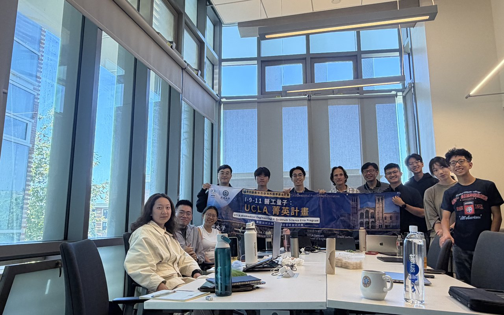
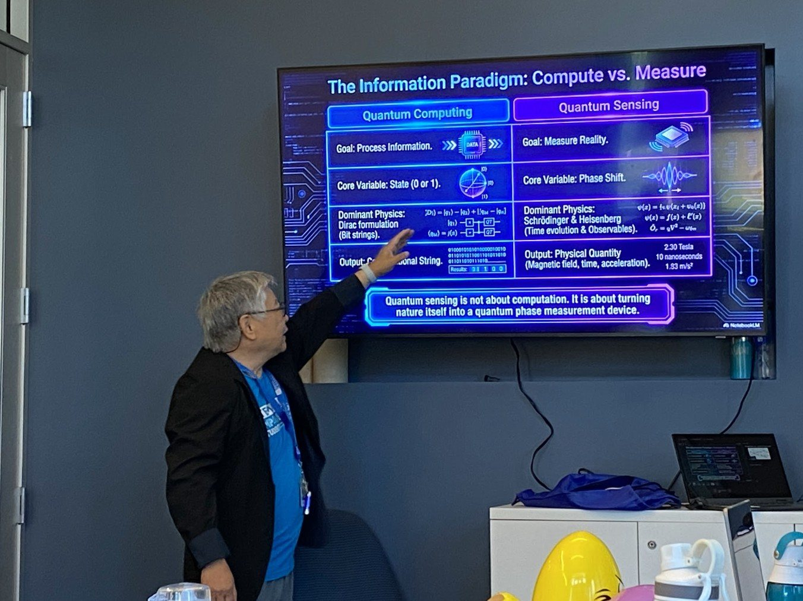
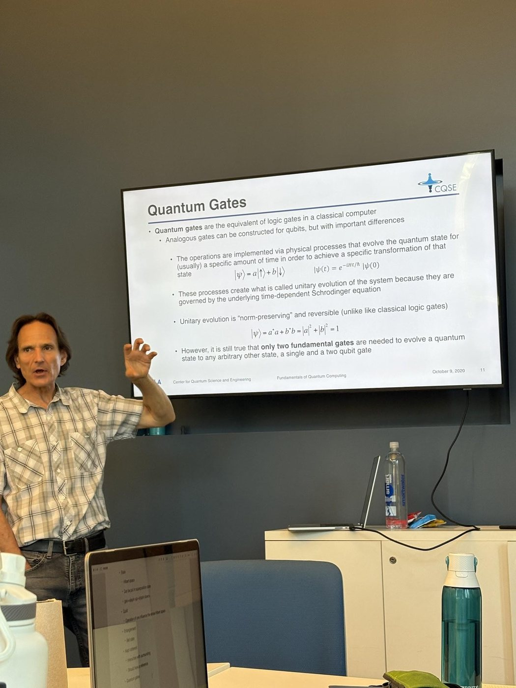
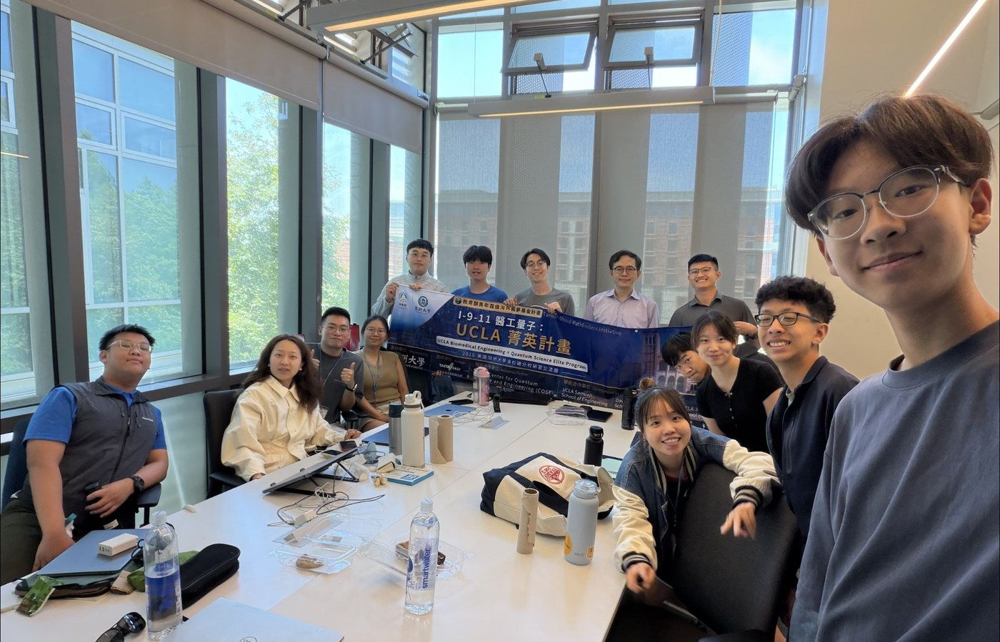
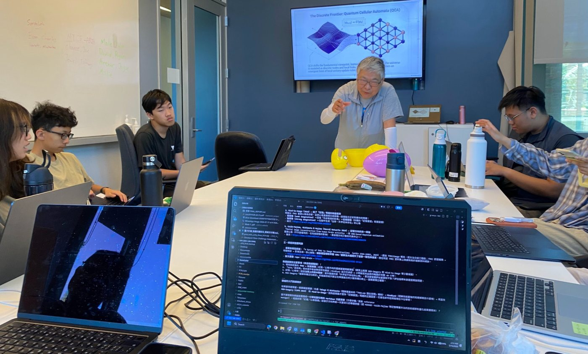
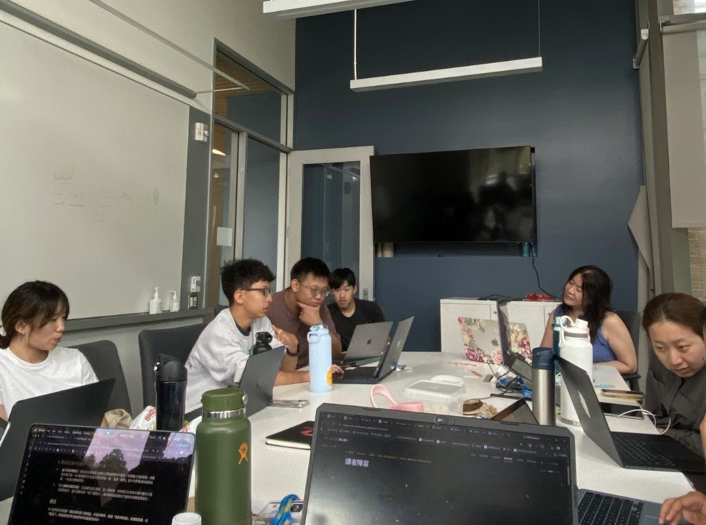
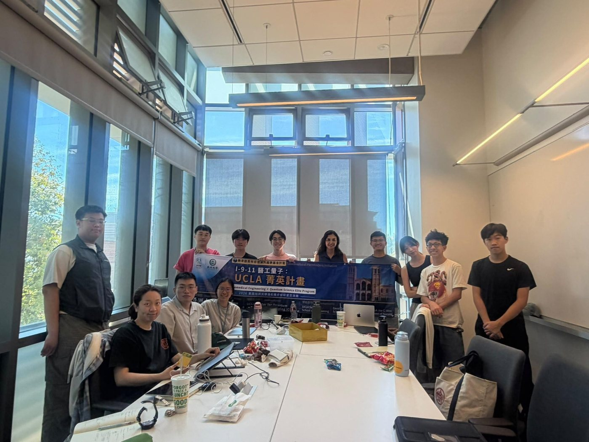
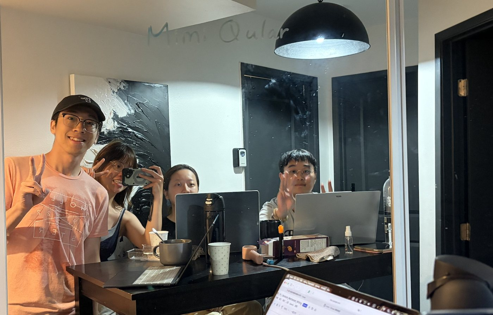

Press Release · 新聞稿 · Weeks 1–2
Quantum, Biomedicine, and AI: Three Tracks Advancing in Parallel
UCLA Elite Program Students Complete a Rigorous First Two Weeks

Supported by the Ministry of Education's Youth Hundred-Billion Overseas Dream Fund Program and hosted by Asia University, in academic partnership with the Center for Quantum Science and Engineering (CQSE) at the University of California, Los Angeles (UCLA), the 2026 UCLA Biomedical Engineering × Quantum Science Elite Program officially opened on July 7 at the UCLA School of Engineering and has now successfully completed the first two weeks of its nine-week curriculum. During this period, students from institutions across Taiwan have stepped into one of the world's leading academic settings, gaining firsthand exposure to three frontier fields: quantum science, biomedical engineering, and artificial intelligence. The program's curricular vision was shaped by Kang L. Wang, UCLA Distinguished Professor and Academician of Academia Sinica, who also links together UCLA's world-class faculty and laboratory network, while Asia University Chair Professor Kuan-Tsae Huang serves as program director, coordinating cross-national resources and the overall direction of the initiative. From the fundamental concepts of quantum mechanics, to how artificial intelligence is reshaping the global economy, to interdisciplinary applications of biomedical technology, the students have, through intensive coursework and hands-on practice, steadily built a body of knowledge spanning physics, engineering, and medicine, and in team collaboration have completed two innovative research proposals of international caliber.
Entering the Quantum World: Beginning with the Stories of Physics's Giants
During the first week of classes, Dr. KS John Huang delivered a session titled "From Everyday Technology to the Quantum World," guiding students across the boundary between the classical and the quantum. Through four core concepts, superposition, the uncertainty principle, the observer effect, and quantum leaps, he sketched a quantum world profoundly different from everyday intuition. He also shared the life stories of giants of physics: Einstein published his four miracle papers at the age of 26, laying the groundwork for his later Nobel Prize in Physics, while Tesla, though suppressed and pushed aside by Edison, never gave up and ultimately changed the world through innovation. These stories carried a message for the students: true breakthroughs often come from challenging established frameworks and persevering.

Quantum Computing Demystified: A Glimpse into the Next Computing Revolution
During the first week of the program, Dr. Mark Gyure, Executive Director of the UCLA Center for Quantum Science and Engineering (CQSE), gave an in-depth introduction to the foundations of quantum science and engineering. He explained how quantum computers use the principles of quantum mechanics to process information: a quantum bit (qubit) can, through superposition, represent both 0 and 1 at the same time, and its value is only fixed at the instant it is measured. Multiple qubits can become correlated through "entanglement," giving rise to computational power that is difficult for classical computers to achieve. Quantum states, however, are extremely fragile and easily distorted by "decoherence," which is why quantum error correction and fault-tolerant mechanisms have become key technical challenges. The class also described how quantum circuits perform computation by replacing conventional logic gates with quantum gates, using Shor's algorithm as an example to illustrate the potential of quantum algorithms to outperform classical ones on specific problems. Most mainstream quantum devices today belong to the "Noisy Intermediate-Scale Quantum" (NISQ) era, and silicon qubits, thanks to their relatively long coherence times, are regarded as a highly promising technological path.

The New Economic Landscape in the Age of AI
That same week, Dr. William Yu of the UCLA Anderson Forecast delivered a talk titled "The New Economy and New Business in the AI Era," examining the profound impact of artificial intelligence on economic and social structures. He observed that highly educated, high-wealth groups who command AI and technological resources continue to widen social divisions, because these technologies dramatically boost their productivity, and he pointed to "universal basic income" as one possible way to ease the strain. The session also highlighted the risk of politically charged misinformation from AI: some models may produce biased content because they are trained on a single, narrow source of data without independent verification. Open-market competition, paired with training AI on closed and validated databases, was presented as a possible remedy. In addition, despite steady technological progress, U.S. GDP growth has fallen short of expectations since 2008, echoing the slowdown in laboratory productivity index growth after 2005. The class speculated that this may be linked to people's growing "addiction" to phones and screens, which crowds out time for deep work. As for the labor market, many traditional forms of work are gradually being replaced by AI, while demand keeps rising for new kinds of work in which AI enhances rather than replaces human productivity. Among these, jobs that depend on human connection, such as medical professionals and fitness trainers, are relatively better able to remain irreplaceable.

Deepening Quantum Science: Life Philosophy from the Principle of Least Action
In the second week, Dr. KS Huang returned to the classroom to continue the foundational course in quantum science. This session covered basic concepts such as "normalization" (ensuring that the sum of probabilities, or quantum probability amplitudes, converges to 1) and "scaling" (computational cost may grow logarithmically, linearly, quadratically, or exponentially), and introduced the five major application areas of quantum technology: computing, simulation, communication, sensing, and imaging. He explained that quantum computing processes information, while quantum sensing estimates physical quantities through changes in quantum states. Concepts such as amplitude and phase, quantum interference, and entanglement further reveal behavior patterns unique to quantum systems, one representative application being magnetic resonance imaging (MRI). Toward the end of the session, Dr. KS Huang shared the most important principle in his life, the "principle of least action." He believes that one's path in life should strike a balance between "the effort expended" and "the long-term benefit," rather than merely seeking immediate ease. He also introduced the "holographic principle." That afternoon, under the guidance of Professor Iris Yang, the students took part in a "teach-back" activity, sharing with one another what they had learned from Dr. KS Huang and deepening their understanding through the mutual reinforcement of teaching and learning.
One's path in life should strike a balance between the effort expended and the long-term benefit, rather than merely seeking immediate ease.
Dr. KS Huang, on the principle of least action


Terahertz Technology: Bridging Biomedical and Industrial Applications
In the second week's sessions, Dr. Mona Jarrahi lectured on the core characteristics and application challenges of terahertz (THz) technology. Terahertz waves occupy a "gap" band between electronics and photonics: electronic components face conversion limits at these high frequencies, while photonic lasers lack a corresponding natural semiconductor material. Most current solutions therefore rely on optical techniques, using a femtosecond laser to illuminate a photoconductive material and generate a current pulse that in turn emits a terahertz signal. Terahertz photons carry low energy, making them safe and free of explosion risk, and they deliver high-contrast surface imaging with fine depth resolution. They cannot, however, penetrate metal or water. Despite this limited penetration, terahertz technology combined with artificial intelligence and diffractive optics still shows broad application potential. Because different materials have distinctive terahertz spectral signatures, pulsed time-domain systems can be used to identify narcotics, food toxins, and burned tissue, and even to help discover new quantum materials. In industrial settings, terahertz technology can also support advanced security screening of luggage and chemicals, as well as real-time monitoring of defects in aircraft coatings.

Student Interdisciplinary Innovation: Research Proposals Where Quantum Meets Biomedicine
Another highlight of the two-week program was the research project proposals developed by student teams, showcasing the creative energy that emerges when quantum science and biomedical engineering are brought together across disciplines.
MimiQular
Research proposalThe MimiQular team, composed of Ryan Chen, David Chan Hsieh, Chi-Wei Lee, Yu-Hsuan Tung, and Chia-Yu Liu, examined whether classical and quantum-assisted computational methods can predict the bacterial molecular mimicry associated with autoimmune diseases of the nervous system. The study focused on the lipooligosaccharides (LOS) of Campylobacter jejuni, whose sugar structures may resemble the gangliosides of human nerve cells and thereby trigger cross-reactive antibodies linked to conditions such as Guillain-Barré syndrome. The team built a transparent model based on nine structural features that successfully ranked candidate ganglioside mimics, and found that fine-grained structural patterns were more predictive than sugar composition alone. Simulated quantum kernel methods were also tested, but they did not yet show an advantage over strong classical machine-learning approaches.
MICE-ARIA
Research proposalThe MICE-ARIA team, made up of Bo-Shan Wang, Cho-Ming Lee, Jewel Wang, and Tiffany Jayi Pan, is developing AI-assisted methods to identify Traditional Chinese Medicine (TCM)-based strategies for mitigating amyloid-related imaging abnormalities (ARIA) triggered by anti-amyloid therapies for Alzheimer's disease. Although anti-amyloid treatments such as lecanemab and donanemab have shown clinical benefit in promoting Aβ clearance, their use is often constrained by the risk of neurological complications from ARIA. Having observed that TCM-derived compounds have the potential to modulate neuroinflammation-related pathways, the team built a graph neural network-based ranking system to predict interactions between TCM compounds and ARIA-related molecular targets. By integrating literature review, public databases, and AI deep learning methods, they hope to offer safer treatment strategies for patients with Alzheimer's disease.

In closing
Over two weeks of rigorous, immersive study, students from institutions across Taiwan not only mastered the core concepts of quantum science, quantum computing, and artificial intelligence, but also, through team-based research, transformed what they learned in the classroom into concrete, cross-disciplinary innovation proposals. From the stories of perseverance in the lives of the giants of physics, to the life philosophy embodied in the Principle of Least Action, to the frontier applications of terahertz technology and biomedical research, this UCLA study journey both broadened the students' scientific horizons and laid a solid first step toward their future pursuit of interdisciplinary research.